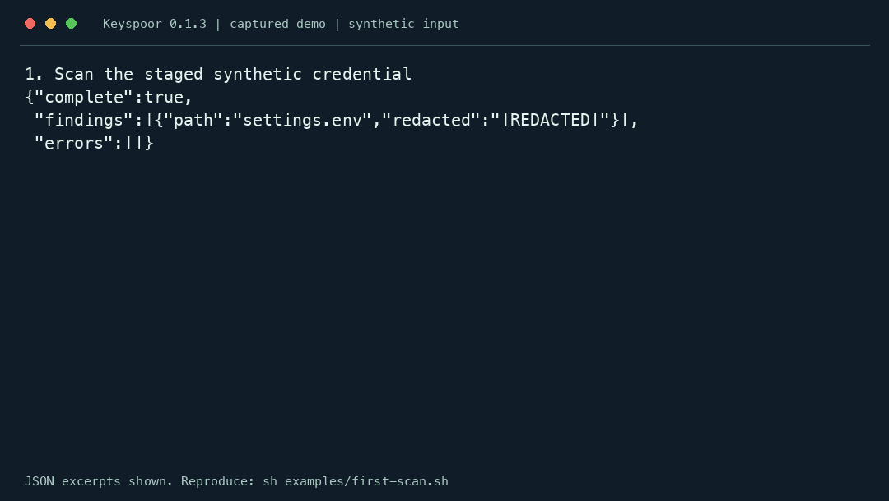

Independent Rust engine · Offline detection
Secret scanning for
AI coding workflows.
Give your coding agent offline scanning tools through MCP. Block findings with staged Git hooks or CI, then use precise locations and redacted reports to review the repair.
Current version 0.1.4 · Apache-2.0 · Rust APIs may change before 1.0
Detect. Block the commit. Repair. Pass.

This recording uses invented input in a disposable Git repository: a finding returns 1 and blocks the commit; removing the literal returns 0 and allows the repaired commit. No agent is involved in this hook demo.
# From a checkout, with Git and Keyspoor installed:
sh examples/first-scan.sh
MCP makes tools available to agents; it does not guarantee a scan before every commit. Use a Git hook or a required CI check for enforcement. Inspect the runnable demo.
One native scanner. Three install paths.
Rust / Cargo
Install the CLI with Rust 1.96 or newer.
cargo install keyspoor --version 0.1.4 --locked
keyspoor scan . --format jsonl
Keyspoor on crates.ioNode.js / npm
Run the native Rust CLI with Node.js 20+.
npm install -g keyspoor@0.1.4
keyspoor scan . --format jsonl
Keyspoor on npmHomebrew
Install on macOS or supported Linux GNU systems.
brew install majiayu000/tap/keyspoor
Homebrew formula
The npm package bundles binaries for macOS ARM64/x64, Linux GNU ARM64/x64 and Windows x64. Linux builds use Ubuntu 24.04; older glibc and Alpine/musl are not supported targets. No install hooks or runtime binary downloads. This is a CLI launcher, not a JavaScript SDK. Standalone releases are available through GitHub.
Try a redacted finding in one command
With Node.js 20+, run this made-up example in a macOS/Linux terminal.
printf 'password=KspDemo_7zQ2mX9pL4vN6sR8\n' | npx -y keyspoor@0.1.4 scan - --format json
Expected: one finding with redacted: [REDACTED] and exit code 1. Clean scans return 0; errors or incomplete scans return 2. First installation needs npm access; detection runs locally.
From local files to agent workflows
Repository-aware scanning
Read the staged index, inspect locally reachable Git history, respect ignore files and track existing findings with fingerprint baselines. History scanning reuses unique Git blobs while preserving commit and path occurrences.
keyspoor staged .
keyspoor history . --range main..HEAD
Agent-friendly results
Use JSON, streaming JSONL or SARIF. The read-only MCP server exposes scan_text and scan_paths, with progress, cancellation and bounded previews. Errors and incomplete scans remain explicit.
keyspoor mcp --root /path/to/project
keyspoor scan . --format sarif
A reusable Rust library
Compile rules once and reuse an Engine across requests and threads. Custom JSON rules can define capture groups, keyword gates, entropy thresholds, path filters and allowlists.
use keyspoor::{Engine, EngineConfig};
let engine = Engine::new(EngineConfig::default())?;
let findings = engine.scan_bytes("config.env", input)?;
Offline, redacted by default
Reports contain rules, byte locations, fingerprints and explanations, without raw secrets or source snippets. Scan UTF-16 and single-layer Base64, or expand ZIP/tar/gzip archives within depth and byte budgets.
No provider requests, credential validation or revocation. Archive members are never written to disk.
CLI exit codes distinguish a complete scan without reported findings (0), a complete scan with findings (1) and errors or incomplete scans (2). Baselines and ignores affect what is reported.
Compare the capability you actually need
The repository includes research on 22 external projects, including detect-secrets, Gitleaks, TruffleHog and Kingfisher. A format rule, an offline detector and a live credential validator have different boundaries. Start with those boundaries before comparing timing.
Read the full feature and competitor research →
Measurements with their boundaries attached
The v6 metadata-sharing optimization was measured against the previous version using 20 alternating pairs on Apple M2 Max/macOS. These are within-project comparisons, not claims to outperform every scanner.
Regular throughput and Git workloads were broadly unchanged; some sparse workloads had slightly higher RSS. Previously observed synthetic regression sets retained 600 true positives, 25 false positives and zero false negatives. These results do not establish real-world precision or production-wide recall.
Reviewing 119 findings from three pinned public snapshots established 56 non-secret spans, 34 intentional test fixtures, 24 evaluation artifacts and five unresolved findings. Version 0.1.4 removes all 56 confirmed non-secret spans in those snapshots while retaining the test/evaluation occurrences. Two unresolved reviewer-note spans are also filtered; the three unresolved JWT-shaped values remain. Inspect every location and the correction results · Dated usage baseline.
Historical evidence uses the former project name secret-scan. Recorded commands and binary hashes are preserved. Offline benchmarks do not measure live verification; unsupported tools and modes are not scored as zero.
Keyspoor：面向 AI 编程工作流的离线密钥扫描器
通过只读 MCP 给 Agent 提供本地扫描工具，通过 Git hook 或必需的 CI 检查拦截命中。自研 Rust 引擎支持文件、Git 暂存区、历史和归档，输出脱敏报告；也可嵌入 Rust 应用。
报告默认脱敏，保留规则、位置、指纹和解释；扫描错误不会伪装成干净结果。目前没有云连接器、凭据活性验证、GPU/ML 或跨函数分析。Benchmark 保留硬件、参数、原始数据与适用边界。
中文安装与使用文档 →